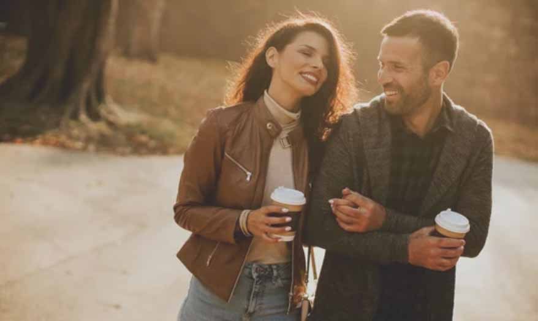

Vores historie
Tilbage i 1972 i København blev Urtekram grundlagt, som i dag holder til i det nordjyske og naturskønne Mariager. Urtekram består af tusinde økologisk fødevarer, økologisk certificerede plejeprodukter samt produkter der tager hensyn til allergiger, vegetarer og veganere. Urtekrams produkter sælges rundt i hele verden bl.a. i hele EU, Skandinavien, Rusland, Asien, Mellemøsten og Nordamerika. Siden 2015 har Urtekram været ejet af Midsona AB i Malmø.
Hos urtekram har vi bankende hjerte, som brænder for økologi og bæredygtighed. Det gælder i hele værdikæden, fra den enkelte producent til, hvordan vi pakker og transporterer vores varer. Modtaget forskellige priser indenfor bæredygtighed I 2017, i følge Sustainable Brand Index, fik Urtekram overrakt prisen som det mest bæredygtige brand. Året efter indtog vi en samlet 2. plads og 1. pladsen i fødevarekategorien.
We care about you and the nature!
 Stiferne Ronnie McGrail og hans hustru Lisbeth Damsgaard i 1972.